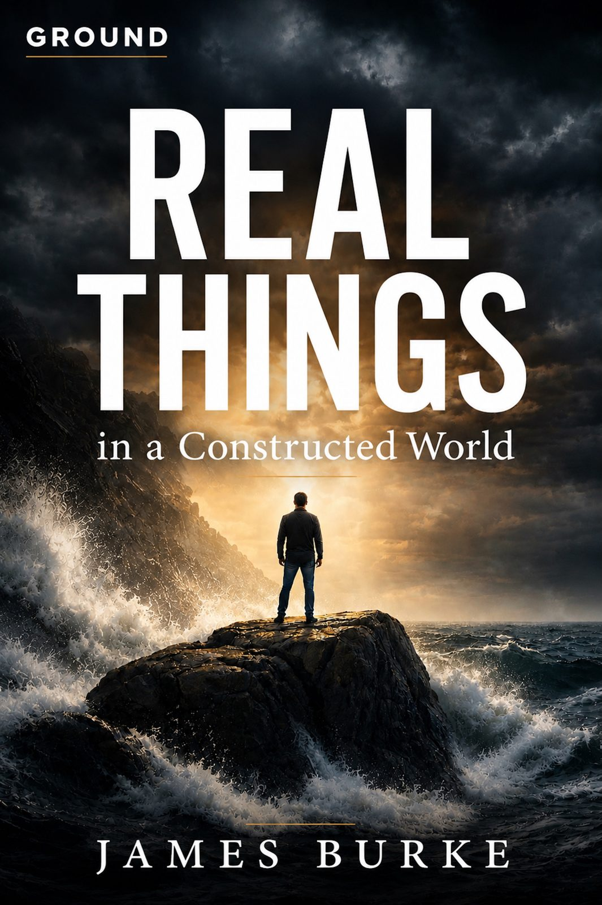
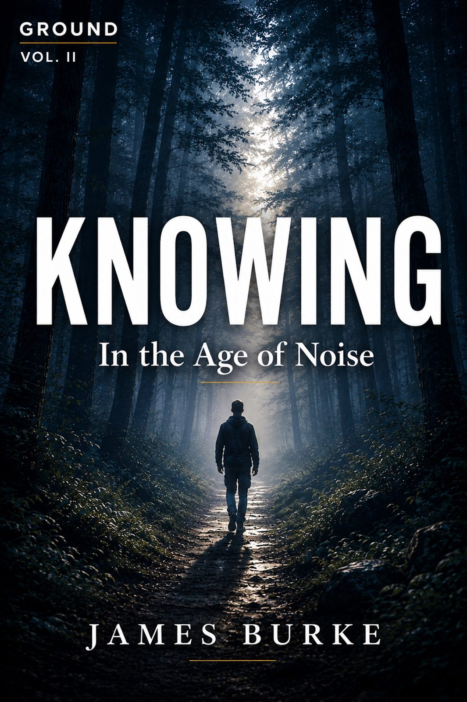

The Ground Trilogy
Ground. Knowing. Done.
You don't need a better you. You need to know where you stand.
Three books. One gospel. It is finished.


Start With the Foundation
The Ground Trilogy is designed to be read in order. Each volume builds upon the last, moving from standing, to walking, to resting in Christ's finished work.
Begin With GroundExplore the Ecosystem
The Ground Trilogy is part of a larger resource library. Connect the books to deeper study through commentaries, articles, and the biblical glossary.